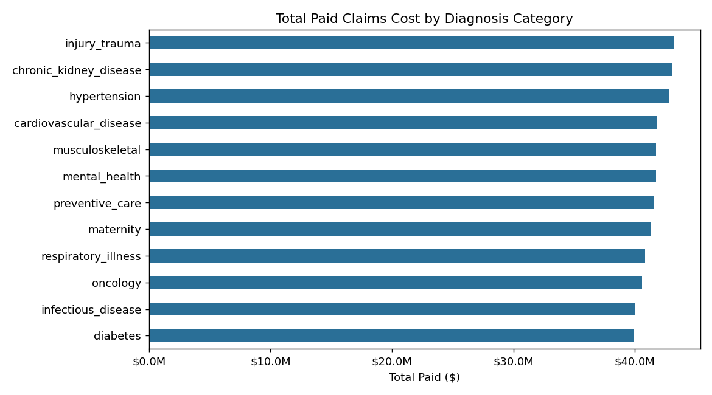
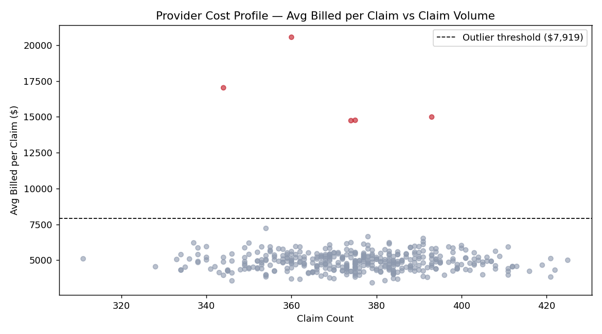
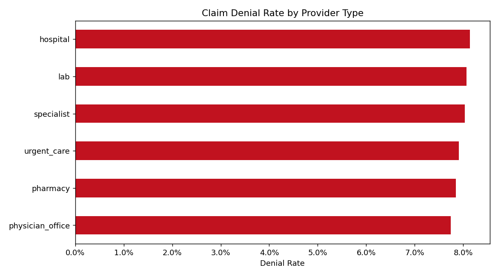
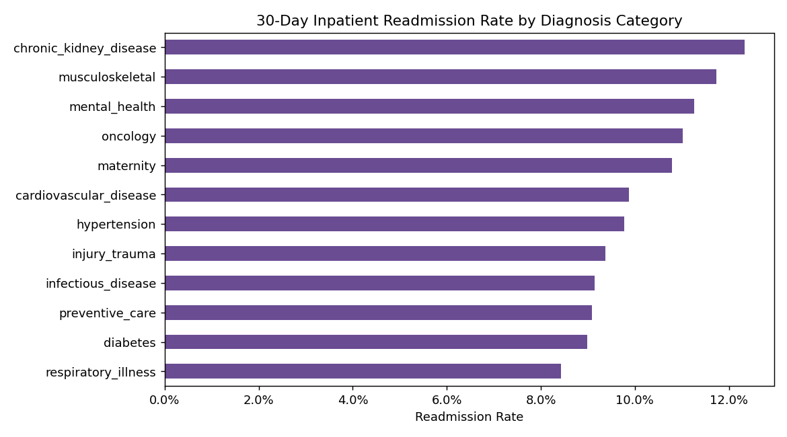
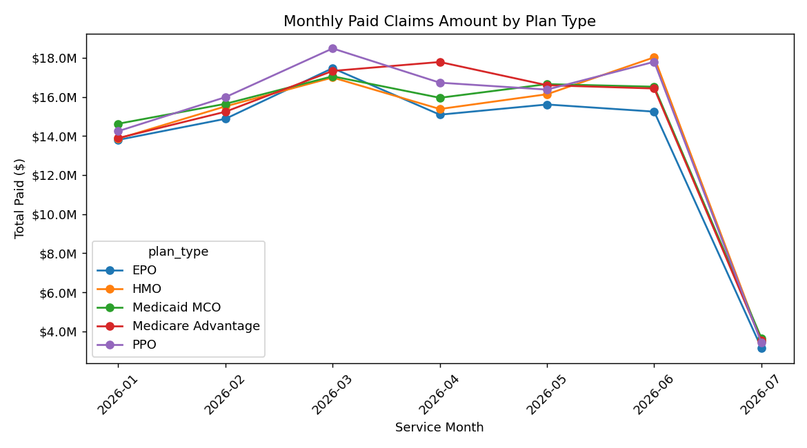

A distributed data pipeline that turns 150,000 raw medical claims into answers a health insurer actually cares about — which conditions cost the most, which providers overcharge, how often claims get denied and why, and which patients come back too soon. Raw data lands in HDFS, Spark cleans and crunches it, Hive serves it as SQL tables, and Python draws the charts.
Data flows through five stages, each a separate tool doing one job well — storage, heavy computation and easy querying kept apart. The whole stack runs locally on Docker containers standing in for a Hadoop cluster.
generate_data.py
→
HDFS — raw claims
→
Spark — clean & aggregate
→
Parquet — curated
→
Hive — SQL tables
→
Python — charts
Why Hadoop & Spark? A spreadsheet chokes on 150,000+ rows across many files. These tools split the work across many machines at once — that's the whole reason they exist.
At a glance
150K
Claims processed (Jan–Jul 2026)
$498.6M
Total paid · from $756.9M billed
34.1%
Billed-to-paid gap (allowed adjustments)
6
Hive analytics tables served
Explore the results
Four business questions, each answered by a Hive table the Spark job writes. Pick one — every number here is computed directly over the 150,000 claims.
What the data says
Cost is spread, not concentrated. Spend is remarkably even across conditions ($40–43M each) — Injury & Trauma ($43.2M) and Chronic Kidney Disease ($43.1M) edge out the rest. No single diagnosis dominates the book.
A handful of providers drive cost risk. Five providers are flagged as statistical outliers, billing above the $7,919 threshold (2σ over the $5,049 cohort mean). PRV-00244 bills $20,555 per claim — over 4× its peers.
Denials are broad-based. 7.96% of claims are denied, spread fairly evenly across seven reasons; incomplete documentation denies the most billed value ($9.5M).
Readmissions cluster in chronic care. 10.16% of inpatient stays end in a 30-day readmission, led by Chronic Kidney Disease (12.3%) and musculoskeletal (11.7%).
Outputs — analysis charts
Generated by the Python analytics layer straight from the Hive tables. Click any chart to enlarge.

Total paid by diagnosis category

Provider cost outliers vs. cohort

Denial rate by provider type

30-day readmission rate by diagnosis

Monthly spend by plan type
How it's built
Generate & store
generate_data.py synthesizes 150,000 realistic claims — billed vs. allowed vs. paid amounts, diagnosis and procedure categories, denial reasons and 30-day readmission flags.
The raw CSV lands in HDFS, append-only and immutable, so any transformation can be re-run without regenerating data.
Process (Spark)
A PySpark ETL job cleans the raw feed, casts types, and writes partitioned Parquet to the curated zone (partitioned by service month).
It computes six aggregates: diagnosis cost burden, provider cost outliers (2σ cohort test), denials by reason and by provider type, 30-day readmissions, and monthly spend by plan.
Serve & show
Hive external tables expose every curated output as SQL, so an analyst can answer the business questions with plain queries.
A Python + matplotlib layer renders the final charts. The whole pipeline is wired together with a Makefile and shell scripts, and stood up on Docker containers.